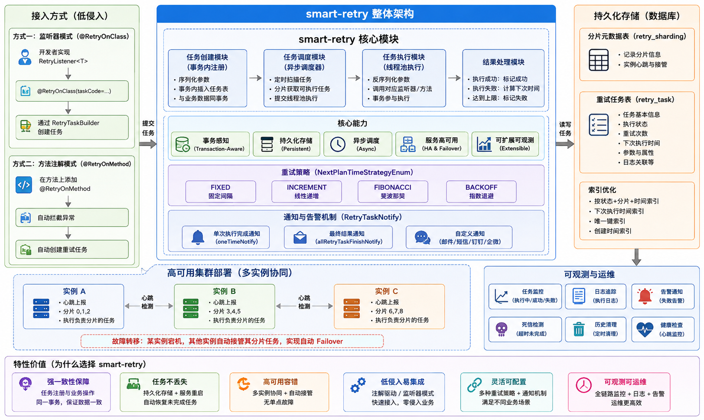

这是 smart-retry 最重要的设计目标。。
smart-retry 的解法：
💡 这保证了 “要么业务成功且无需重试，要么业务部分成功但重试任务已就位”，实现最终一致性。 避免了“补偿任务注册”和“业务操作”不在同一事务中导致的数据不一致问题。
retry_task 表）。📌 对比：Guava Retry / Spring Retry 是纯内存、同步、无持久化的，不适合跨进程/宕机场景。
`xml <dependency> <groupId>com.smart.retry</groupId> <artifactId>smart-retry-mybatis-start</artifactId> <version>${smart-retry.version}</version> </dependency> ` 依赖，可快速接入 Spring Boot 应用。模块化设计：
smart-retry-core：核心重试逻辑smart-retry-common：通用工具类、DTOsmart-retry-extensions：扩展支持（如对 PostgreSQL 的适配）smart-retry-starters：Spring Boot Starter，便于 Spring 项目一键集成smart-retry-test：测试用例| 设计目标 | 实现手段 |
|---|---|
| **可靠性** | 任务持久化 + 事务绑定 |
| **一致性** | 本地事务内注册重试任务 |
| **可用性** | 多实例自动接管 + 故障恢复 |
| **易用性** | Starter 自动配置 + 简洁 API |
| **轻量性** | 无外部依赖，仅需 DB |
| **事务执行** | 如果重试方法存在事务声明，会参与事务执行 |
| 方案 | 持久化 | 事务集成 | 异步 | 服务重启恢复 | 适用场景 |
|---|---|---|---|---|---|
| **smart-retry** | ✅ | ✅ | ✅ | ✅ | 企业内部高可靠异步任务 |
| Spring Retry | ❌ | ❌ | ❌（默认同步） | ❌ | 简单方法重试，临时失败 |
| Guava Retry | ❌ | ❌ | ❌ | ❌ | 工具类重试，无状态操作 |
| 延迟消息队列 | ✅ | ⚠️（需额外保障） | ✅ | ✅ | 大规模分布式系统 |
| 定时补偿 Job | ✅ | ❌（通常分离） | ✅ | ✅ | 老旧系统兜底方案 |
<dependency>
<groupId>com.smart.retry</groupId>
<artifactId>smart-retry-mybatis-start</artifactId>
<version>${latest.version}</version>
</dependency>💡 请替换
${latest.version}为实际版本号。
执行 SQL 初始化重试任务表（以 MySQL 为例）：
CREATE TABLE `retry_sharding` (
`id` bigint NOT NULL PRIMARY KEY AUTO_INCREMENT COMMENT 'ID',
gmt_create DATETIME NOT NULL COMMENT '创建时间',
status TINYINT(4) NOT NULL COMMENT '状态 0:未分配 1:已分配',
creator_id VARCHAR(128) comment '创建分片的实例ID',
instance_id VARCHAR(128) comment '当前持有分片的实例ID',
last_heartbeat DATETIME DEFAULT NULL COMMENT '最后心跳时间',
KEY `idx_instance_id` (`instance_id`),
KEY `idx_last_heartbeat` (`last_heartbeat`)
)ENGINE = InnoDB DEFAULT CHARSET = utf8mb4 COMMENT ='分片元数据表';
CREATE TABLE `retry_task` (
`id` bigint NOT NULL PRIMARY KEY AUTO_INCREMENT COMMENT 'ID',
`gmt_create` datetime NOT NULL COMMENT '创建时间',
`gmt_modified` datetime NOT NULL COMMENT '修改时间',
`sharding_key` bigint NOT NULL COMMENT '分片键',
`task_desc` varchar(128) DEFAULT NULL COMMENT '任务描述',
`task_code` varchar(128) DEFAULT NULL COMMENT '需要执行的任务编码',
`parameters` text COMMENT '参数数据',
`attribute` text COMMENT '属性',
`status` tinyint NOT NULL COMMENT '最终执行状态 0:待执行,1:执行中,3:执行失败,2:执行成功',
`interval_second` int DEFAULT NULL COMMENT '执行间隔秒,如果不填写默认是600秒(十分钟执行一次)',
`delay_second` int DEFAULT NULL COMMENT '初次创建任务延迟时间，默认是100秒后执行',
`max_execute_time` int DEFAULT NULL COMMENT '任务最大执行时间',
`next_plan_time` datetime DEFAULT NULL COMMENT '下次执行时间',
`retry_num` int DEFAULT NULL COMMENT '重试次数',
`creator` varchar(64) DEFAULT NULL COMMENT '创建者(默认是IP)',
`executor` varchar(64) DEFAULT NULL COMMENT '执行者',
`origin_retry_num` int DEFAULT NULL COMMENT '存放任务原始的次数',
`current_log_id` bigint DEFAULT NULL COMMENT '当前运行日志id',
`unique_key` varchar(64) DEFAULT NULL COMMENT '唯一标识',
`next_plan_time_strategy` int DEFAULT NULL,
KEY `idx_next_plan_time` (`next_plan_time`),
KEY `idx_status_sharding_key_next_plan_time_retry_num` (`status`,sharding_key,`next_plan_time`,`retry_num`),
KEY `idx_gmt_create_sharding_key` (`gmt_create`,`sharding_key`),
KEY `idx_unique_key` (`unique_key`)
) ENGINE=InnoDB AUTO_INCREMENT=1094 DEFAULT CHARSET=utf8mb4 COLLATE=utf8mb4_0900_ai_ci COMMENT='重试任务表';spring:
smart-retry:
mybatis:
enabled: true # 是否启用任务重试
dataSource: dataSource #系统数据源bean名称
# 任务扫描间隔（秒），默认20秒
task-find-interval: 10
# 死信任务检测，如果不配置默认不检测
dead-task:
dead-task-check: true
task-max-execute-timeout: 3600 # 超过1小时未完成视为死信，自动将任务恢复为待执行状态
# 历史任务清理，如果不配置默认不开启
clear-task:
enabled: true
before-days: 3 # 清理3天前的数据
cron: 0 0 3 * * ? # 可选：自定义清理cron时间节点,默认每天凌晨三单执行清理
health:
interval: 3 # 心跳间隔（秒），默认3秒
timeout: 10 # 心跳超时时间：超过此时间未收到心跳，实例被视为死亡，默认240秒
scan-interval: 5 #后台检测任务的扫描间隔（用于接管失效实例）
# 自定义线程池，如果不配置则使用默认线程池
executor:
core-pool-size: 4
max-pool-size: 8
queue-capacity: 3000
keep-alive-seconds: 60@RetryOnClass）适用于需要自定义重试逻辑的场景。
@RetryOnClass(
taskCode = "userNotifyTask",
retryTaskNotifies = {NotifyTest.class} // 可选：失败通知
)
public class UserNotifyListener implements RetryListener<UserDTO> {
/**
* 消费任务 ,
* 如果存在事务，会参与事务执行
* @param param 参数
* @return 执行结果
*/
@Override
@Transactional
public ExecuteResultStatus consume(UserDTO param) {
try {
// 调用第三方通知服务
notificationService.send(param);
return ExecuteResultStatus.SUCCESS;
} catch (Exception e) {
log.error("通知失败", e);
return ExecuteResultStatus.FAIL; // 触发重试
}
}
}
public class NotifyTest implements RetryTaskNotify {
// 每次执行完毕后，触发一次通知
@Override
public void oneTimeNotify(NotifyContext context) {
if(context.getThrowable()!=null){
String taskName = context.getRetryTask().getTaskCode();
String params = context.getRetryTask().getParameters();
System.out.println(context.getThrowable().getMessage());
}
System.out.println("oneTimeNotify");
}
// 任务执行次数达到设置的最大次数后通知
@Override
public void allRetryTaskFinishNotify(NotifyContext context) {
System.out.println("finishTaskNotify");
}
}@Autowired
private RetryTaskOperator retryTaskOperator;
public void testCreateTask() {
UserDTO user = new UserDTO("张三", "zhangsan@example.com");
RetryTaskBuilder<UserDTO> builder = RetryTaskBuilder.of()
.withTaskCode("userNotifyTask")
.withTaskDesc("用户注册通知")
.withRetryNum(3)
.withDelaySecond(5) // 首次延迟5秒
.withIntervalSecond(10) // 后续间隔10秒
.withNextPlanTimeStrategy(NextPlanTimeStrategyEnum.BACKOFF)
.withParam(user);
// 创建任务,返回任务ID,系统会自动调度任务
long taskId = retryTaskOperator.createTask(builder);
}
@Test
public void testInvokeTask() {
long taskId = 1;
// 任务创建后，如果需要立即触发执行，可以通过主动调用的方式进行任务的触发：
/**
* 异步触发任务
* 如果调用该方法，则任务会优先放到队列中，等待执行。如果队列中存在任务，则需要等待队列中的任务执行完成。
* 适合立即执行的任务，如领域事件、通知、短信、等。
*/
retryTaskOperator.invokeTaskAsync(taskId);
/**
* 同步触发任务
* 触发任务，同步执行任务，如果调用该方法，则任务会立即执行。同时会阻塞当前线程，直到任务完成。
* 可以作为领域事件的的同步通知，如订单创建成功后通知用户。
*/
retryTaskOperator.invokeTaskSync(taskId);
}@RetryOnMethod）适用于已有方法需自动重试的场景，无需写监听器。
@Service
public class OrderService {
/**
* 如果调用失败会自动重试
* 如果存在事务，会参与事务执行
* @param order
*/
@RetryOnMethod(
maxAttempt = 3,
firstDelaySecond = 2,
intervalSecond = 5,
nextPlanTimeStragy = NextPlanTimeStrategyEnum.FIBONACCI,
include = {RemoteCallException.class},
retryTaskNotifies = {SmsAlertNotify.class}
)
@Transactional
public void createOrder(Order order) {
// 调用支付系统
paymentClient.charge(order);
// 若抛出 RemoteCallException，则自动重试
}
}⚠️ 注意：方法必须是 public，且被 Spring 容器管理（AOP 生效）。
public class EmailAlertNotify implements RetryTaskNotify {
@Override
public void oneTimeNotify(NotifyContext context) {
log.info("第{}次重试，任务ID: {}", context.getRetryCount(), context.getTaskId());
}
@Override
public void allRetryTaskFinishNotify(NotifyContext context) {
if (context.getExecuteResultStatus().equals(ExecuteResultStatus.SUCCESS)) {
log.info("任务最终成功");
} else {
// 发送告警邮件/钉钉/企业微信
alertService.send("重试任务彻底失败: " + context.getTaskCode());
}
}
}| 配置项 | 默认值 | 说明 |
|---|---|---|
| `smart-retry.task-find-interval` | `20` | 任务扫描间隔（秒），最小可以设置为1秒 |
| `smart-retry.dead-task.dead-task-check` | `false` | 是否开启死信检测 |
| `smart-retry.clear-task.enabled` | `false` | 是否开启历史清理 |
| `smart-retry.executor.*` | 见下表 | 线程池参数 |
线程池默认值：
corePoolSize: CPU 核数 + 1maxPoolSize: CPU 核数 × 2queueCapacity: 3000keepAliveSeconds: 60以下是针对 RetryTaskBuilder<T> 中所有属性的详细说明，可直接作为 “重试任务属性详解” 章节插入到 README.md 中：
RetryTaskBuilder）当你通过 RetryTaskBuilder 构建一个重试任务时，以下属性控制其行为：
| 属性 | 类型 | 默认值 | 必填 | 说明 |
|---|---|---|---|---|
| `taskCode` | `String` | — | ✅ 是 | **任务类型唯一标识**。必须与 `@RetryOnClass(taskCode = "...")` 中的值一致，用于匹配具体的重试逻辑处理器。建议使用语义化命名，如 `"orderCreateRetry"`。 |
| `taskDesc` | `String` | — | ❌ 否 | 任务描述，用于日志、监控或管理后台展示，便于运维识别。 |
| `param` | `T`（泛型） | — | ✅ 是 | **任务执行所需的业务参数**。框架会将其 JSON 序列化后存入数据库。支持复杂对象、List、Map 等。 |
| `retryNum` | `Integer` | — | ✅ 是 | **最大重试次数**。例如设为 `3`，则最多执行 ** 3次重试 **。达到上限后标记为最终失败，并触发 `allRetryTaskFinishNotify`。 |
| `delaySecond` | `int` | `5` | ❌ 否 | **首次执行的延迟时间（秒）**。任务创建后，不会立即执行，而是等待 `delaySecond` 秒后再首次尝试。适用于“稍后重试”场景。 |
| `intervalSecond` | `Integer` | — | ⚠️ 条件必填 | **基础间隔时间（秒）**。具体含义由 `nextPlanTimeStrategy` 决定：<br>• `FIXED`：每次间隔固定为此值<br>• `INCREMENT`：第 n 次间隔 = `intervalSecond × n`<br>• `FIBONACCI`：按斐波那契数列倍数增长<br>• `BACKOFF`：指数退避（如 2ⁿ × interval）<br>⚠️ 若使用非 `FIXED` 策略，此字段必须提供。 |
| `nextPlanTimeStrategy` | `NextPlanTimeStrategyEnum` | `FIXED` | ❌ 否 | **下次执行时间计算策略**：<br>• `FIXED`：固定间隔（最常用）<br>• `INCREMENT`：线性递增<br>• `FIBONACCI`：斐波那契增长（1,1,2,3,5...）<br>• `BACKOFF`：指数退避（适合应对瞬时抖动） |
假设 retryNum = 3，delaySecond = 2，intervalSecond = 5：
| 策略 | 执行时间点（相对于任务创建时刻） |
|---|---|
| `FIXED` | 2s → 7s → 12s |
| `INCREMENT` | 2s → 7s (5×1) → 17s (5×2) |
| `FIBONACCI` | 2s → 7s (5×1) → 12s (5×1) |
| `BACKOFF` | 2s → 7s (5×2⁰) → 17s (5×2¹) |
💡 建议：
- 网络调用失败 → 用
BACKOFF- 依赖资源可能逐步恢复 → 用
INCREMENT或FIBONACCI- 定时轮询状态 → 用
FIXED
intervalSecond 与策略强相关 若使用 BACKOFF、FIBONACCI 等动态策略，但未设置 intervalSecond，框架将无法计算下次执行时间，可能导致任务卡住。delaySecond ≠ intervalSecond - delaySecond 只影响第一次执行 - intervalSecond 影响后续重试间隔